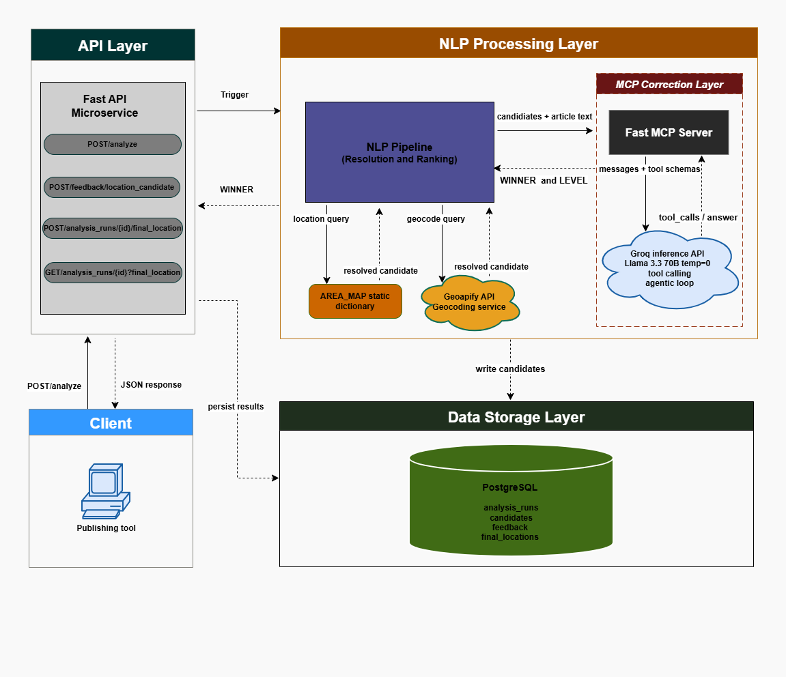
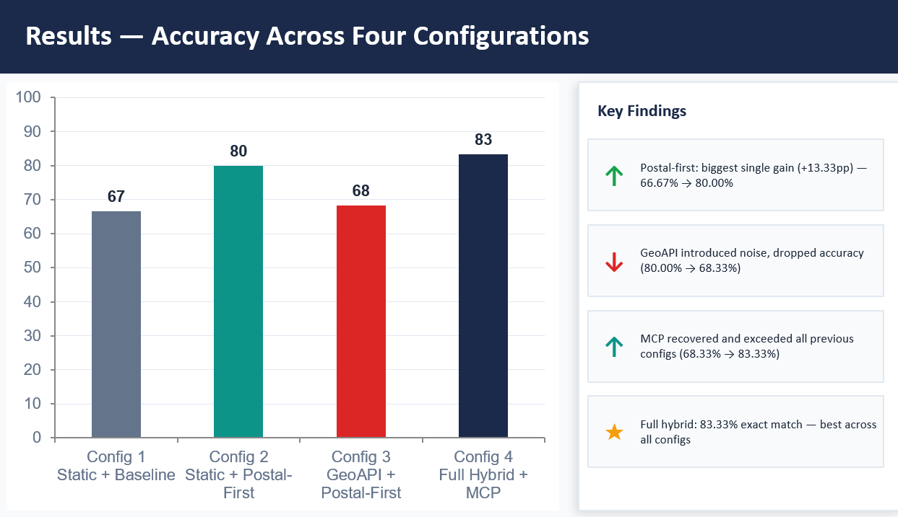
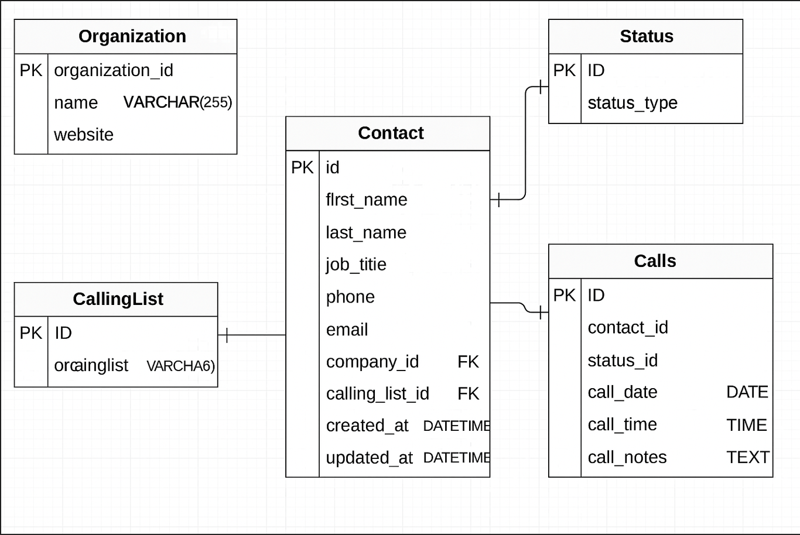
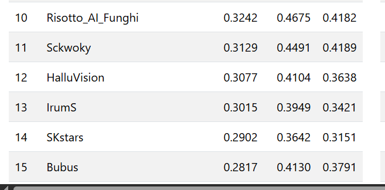
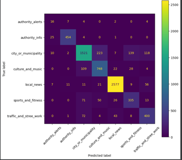
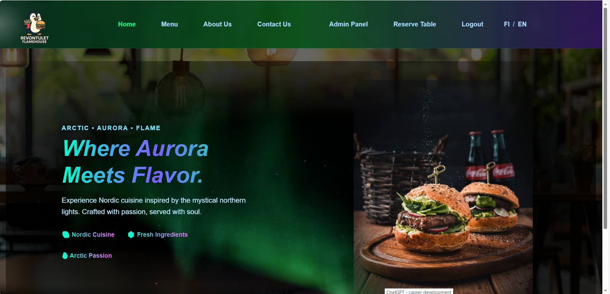
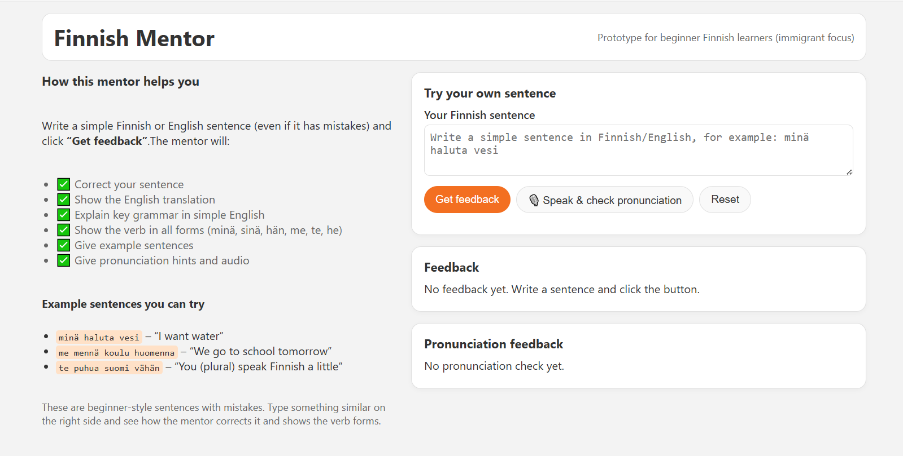
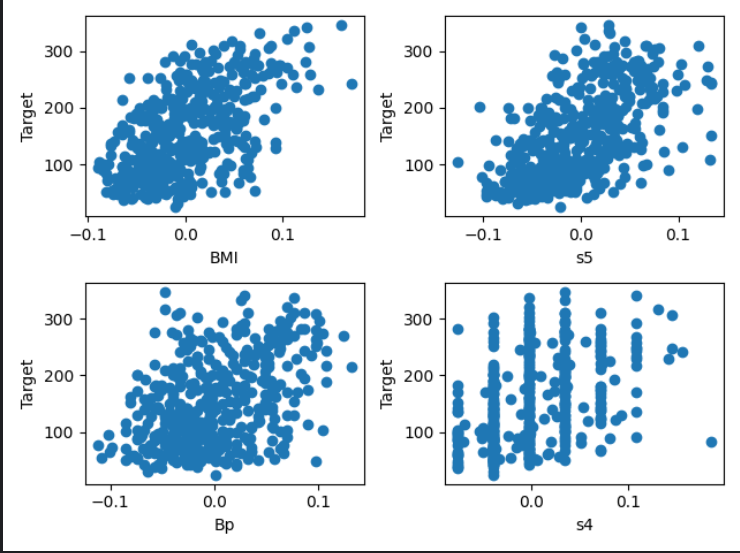
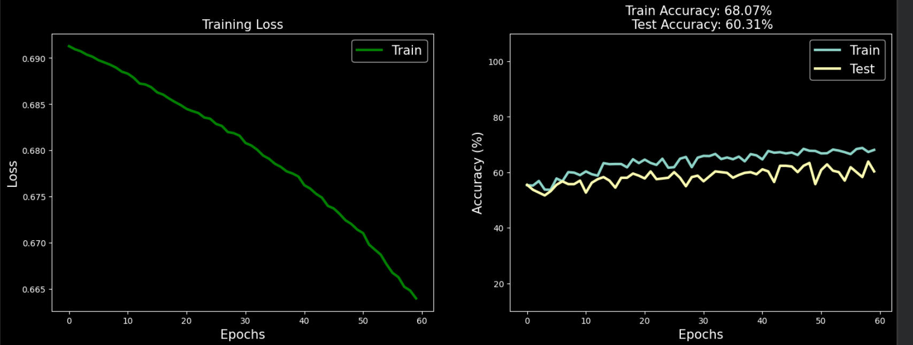

Applied machine learning, focused on NLP research.
MSc graduate in Information Technology specialising in AI and NLP, Currently looking for PhD positions in natural language processing, especially interested in multilingual and clinical NLP, LLM evaluation, hallucination detection, and responsible/trustworthy AI. Built a context-aware location extraction pipeline for Finnish news articles as part of my Master's thesis at Metropolia UAS, in collaboration with Superhood Oy, and independently participate in NLP shared tasks and applied research projects.
Focus
Professional & Research Work

Internship – Document-Level Location Selection | Superhood Oy
Built a FastAPI microservice for Finnish news article processing, implementing NLP preprocessing and location extraction using Stanza and Geoapify across four pipeline configurations: baseline, postal-first ranking, and static and dynamic resolver modes.

Master's Thesis – A Hybrid Rule-based & LLM Approach
Evaluated the internship pipeline through controlled experiments comparing static, API-based, and MCP-assisted approaches for location disambiguation. Achieved 83.33% exact match accuracy across 60 annotated articles using a Groq-hosted LLM for context-aware ranking.

VoIP Backend – Asiakasgroup Oy | IMIB network
Designed REST endpoints and database models for a Flask and MySQL backend system supporting CRUD and bulk operations and integrations. Contributed to structured API design, database integration, and collaborative development within a production-oriented environment.
Independent Research
Self-directed research projects, undertaken independently outside of coursework or employment.

SHROOM-Visions 2026 – Multimodal Hallucination Detection (Shared Task)
Solo submission to the SHROOM-Visions shared task (UncertaiNLP workshop, EMNLP 2026), a multilingual benchmark for detecting fine-grained hallucination spans in vision-language model outputs. Built a zero-shot LLM-as-judge pipeline using Claude Haiku 4.5 as the base detector with Claude Sonnet 5 for second-opinion verification, including staged prompt engineering and targeted post-processing. Ranked 13th of 28 teams on the English subset as an independent researcher.

Finnish News Topic Classification – Baseline vs. Fine-Tuned Transformer
Multi-class topic classification of Finnish news articles from Superhood Oy into 7 categories. Built a TF-IDF + Logistic Regression baseline (0.745 macro F1), then fine-tuned FinBERT (TurkuNLP/bert-base-finnish-cased-v1) via the Hugging Face Trainer API, improving macro F1 to 0.787. Includes class-imbalance handling, stratified train/val/test splits, and confusion-matrix-based error analysis.
Public Demos

Full-Stack Restaurant Website
Built and deployed a Flask backend with MongoDB integration and REST endpoints.

Finnish Tutor Assignment App
Backend-focused assignment demonstrating routing and server-side logic in Python.
Machine Learning Experiments

Machine Learning Coursework
Applied machine learning fundamentals: regression, classification, ensemble methods, dimensionality reduction, and structured model evaluation, implemented across reproducible Jupyter notebooks.

NLP Coursework
Progression from text preprocessing and vectorization through neural sequence models (RNN, LSTM, seq2seq, attention) to transformer fine-tuning, implemented across hands-on Jupyter notebooks.
Skills
Languages: English (Fluent) · Finnish (Basic – A1/A2)
Contact
Email: irum.shehryar@gmail.com